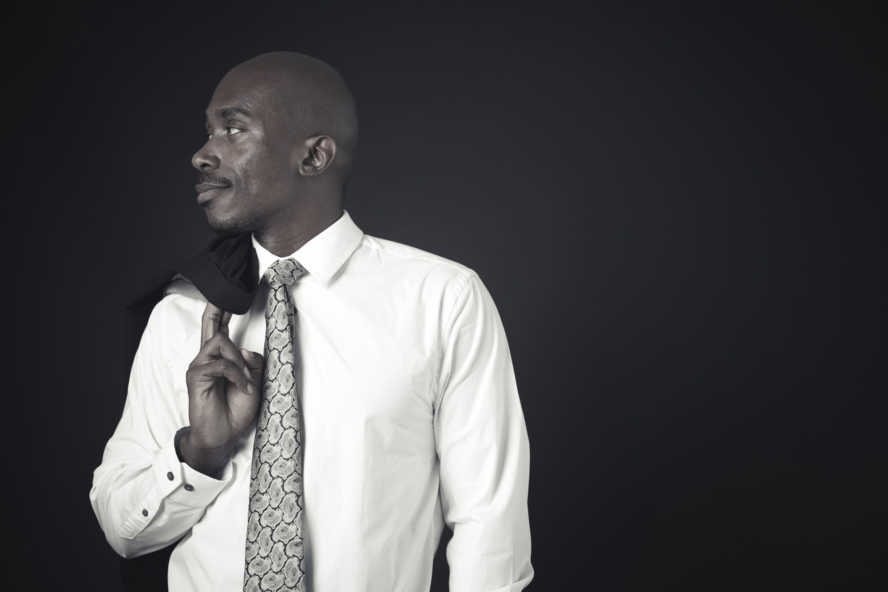

Edward raheem ali Crawford
OBJECTIVE
Creative Management and Educational Leadership Professional with over 20 years of expertise in Academic Administration, Marketing and Graphic Design roles. Skilled in Program Development,Strategic Planning and Higher Education Directives. A problem-solver readily adaptive in diverse work settings and proficient in generating superior results in fast-paced, deadline-oriented environments and self-motivated with excellent interpersonal skills, organization and time-management effectiveness.
SUMMARY
Creative Management and Educational Leadership Professional with over 20 years of expertise in Academic Administration, Marketing and Graphic Design roles. Skilled in Program Development,Strategic Planning and Higher Education Directives. A problem-solver readily adaptive in diverse work settings and proficient in generating superior results in fast-paced, deadline-oriented environments and self-motivated with excellent interpersonal skills, organization and time-management effectiveness.
PROFESSIONAL EXPERIENCE
Sales/Marketing Manager - Conicelli Autoplex - Conshohocken, PA / 2017 - 2019
Cultivated relationships with new customers to achieve sales objectives and provided insight into new products, features, and options for Toyota/Hyundai/Genesis/Nissan/Honda brands.
- Created marketing initiatives to increase foot and internet traffic to dealership. Managed marketing projects including collateral, newsletter articles,mission statement, website updates, and expansion of social media outreach.
- Directed communications for all internal marketing teams; designed social media and promotional materials.
- Facilitated on-boarding/training of new sales consultants.
Marketing Consultant - Phatboy Media - Los Angeles, CA / February 2015 - October 2016
Customized promotion and branding initiatives to ensure customer satisfaction and secure new clients.
- Communicated project direction and deadlines to both internal and external resources in addition to managing creative and marketing submissions, revisions, comments and approvals.
- Oversaw art direction for private client projects and services and managed outsourced assignments for design and branding.
- Developed marketing to facilitate client engagement.
- Supervised subcontractors, design team in project objectives and goals.
Marketing Manager - AG Air - Los Angeles, CA / February 2013 - February 2015
Managed a team of marketers and designers who implemented social media strategy across Twitter, Facebook, Hootsuite, and Quantcast accounts utilizing Oracle. Oversaw annual marketing budget.
- Directed development of business-to-consumer, business-to-business and associate-to-family,and affiliate marketing programs increasing annual sales by 10%.
- Composed six month strategic marketing plan and directed brand development and management through launch.
Assistant Director of Graphic Design/Advertising - The Art Institute of Philadelphia - Philadelphia, Pa / 2007 - 2014
Assisted in overall management and administration of six design programs (Graphic Design, Industrial Design, Interior Design, Photography, Video FX, Advertising). Created targeted marketing campaign to promote the school in the community through print and web endeavours.
- Collaborated with appropriate colleagues to further support the needs of students.Prepared and managed program’s budget annually
- Designed and maintained college blogs, social media accounts, school newsletter, promotional materials, and magazine
- Served as an adjunct faculty member for senior level classes
EDUCATION
Master's of Business Administration - Marketing University of Phoenix - Philadelphia, PA / 2005 - 2007
Bachelor's of Fine Arts - Graphic Design University of Massachusetts - Lowell, MA / 1996 - 2000